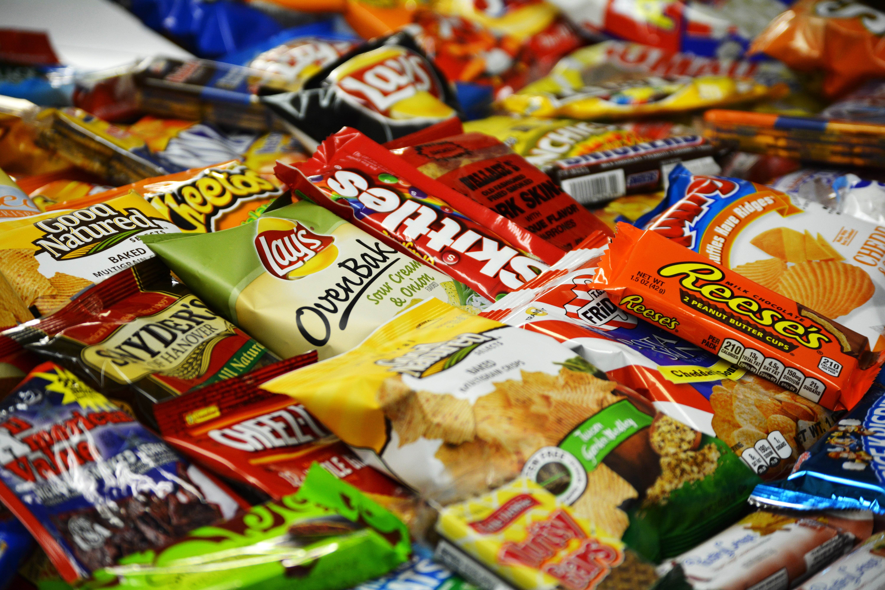

the reason why i like these snacks and teams are that they are really good. The snacks are really awesome and they make me remember the good times that i have. the reason why i like the eagles because they are an awesome team and i dont like to bandwagon with the cowboys like most of the people do. i also like the rockets because of the team and james harden has great chemesitry and james harden has a high passing rate and alot of ball control
a lot of people like these things because wh ocan live without basketball, football, and snacks that is the greatest combination you can have because people can enjoy thereself while being full and enjoying yourself while watchinng the game and the games are really intesne and this is what i like about sports or snacks they are the best thing in the world and i cannot live without them in my life
